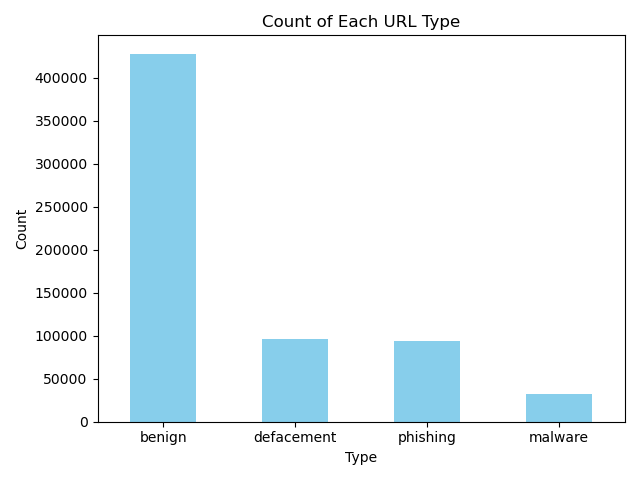

資料分析實作練習 - malicious urls
1. 讀取資料
嘗試使用學到的基本語法來分析.csv檔，先以 malicious urls 惡意網址的資料集來練習，使用 pandas 的 read_csv() 讀取資料，檔案路徑採相對路徑管理：
資料來源 https://www.kaggle.com/datasets/sid321axn/malicious-urls-dataset
import pandas as pd
df = pd.read_csv("./data/malicious_phish.csv")
2. 初步觀察資料內容
為了了解資料基本情況，先用 head() 查看前幾筆資料，並搭配 shape 與 isnull().sum() 檢查欄位結構與缺失值。
print("---"*30)
print("First 10 datas")
print(df.head(10))
print("---"*30)
print("Columns")
print(df.columns)
print("---"*30)
print("Shape")
print(df.shape) # 有幾筆資料、幾個欄位
print("---"*30)
print("Sum of null")
print(df.isnull().sum()) # 各欄位的缺值（NaN）數量
3. 統計分析：各類型網址數量分布
資料集中的 type 欄位標示了每筆網址的類別，如 phishing、malware 等。我們可以使用 value_counts() 來計算每種類型的數量與比例。
print("---"*30)
print("Type")
print(df["type"].value_counts())
print("---"*30)
print("Proportion")
print(df["type"].value_counts(normalize=True))
4. 視覺化結果
將 type 分類以長條圖方式視覺化，可更直觀地觀察分布情況。
import matplotlib.pyplot as plt
def data_visulize(title, xlabel, ylabel, png_name):
# 繪製長條圖
df["type"].value_counts().plot(kind="bar", color='skyblue')
plt.xticks(rotation=0)
# 加標題
plt.title(title)
plt.xlabel(xlabel)
plt.ylabel(ylabel)
# 儲存圖片
plt.tight_layout()
plt.savefig(png_name)
data_visulize(title = "Count of Each URL Type",
xlabel = "Type",
ylabel = "Count",
png_name = "type_counts.png")

小結
這是一份非常乾淨的資料集，欄位結構單純且無缺失值，很適合初學者練習資料探索與視覺化。 下一步可以考慮從 url 欄位衍生特徵，例如：
- 網址長度
- 是否包含特殊符號或 IP 格式
- 各類型的網址長度比較